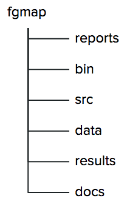
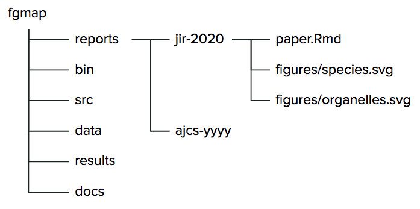
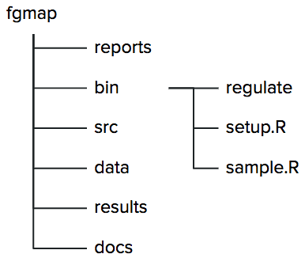
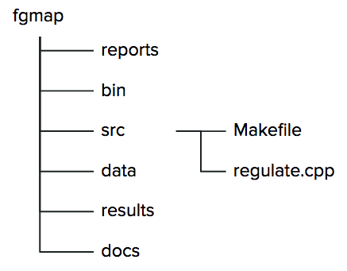
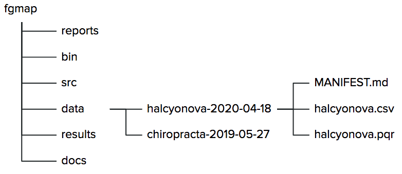
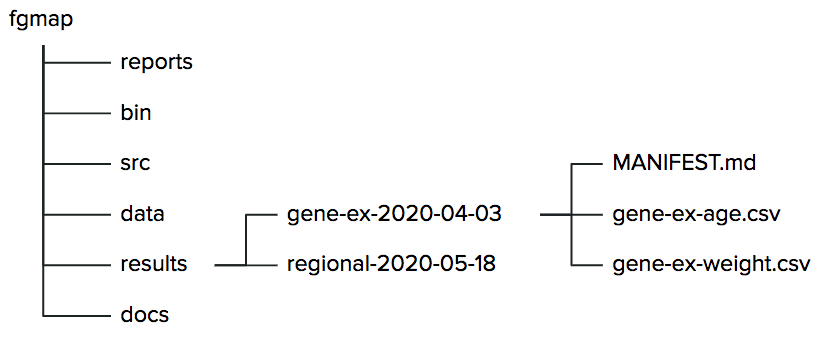
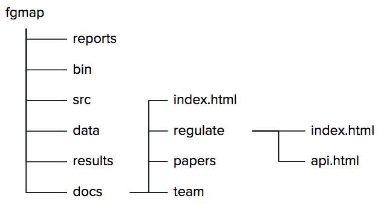

### Managing Research Software Projects # Structure --- # What problems are we trying to solve? - Decomposition - "What is a 'project'?" - Findability - "Where is everything?" - Evolution - "Oh great—another dataset…" --- # When to create a project - A dataset used by several groups in several ways - Has its own data collection and tidying scripts - A one-of-a-kind analysis for an NGO - Data subsets, Jupyter notebooks, generated PDFs - A software package - With a tutorial, documentation, and sample data --- # Four approaches - One repository per publication - Only if datasets and tools are their own projects - One per tool - Only if you are comfortable creating packages - One per team - But teams change over time - One per regular meeting --- # Standard files ## First 3 of 5 - Put these in the project's root directory - With or without a `.md` suffix - `README`: brief description of project - `CITATION`: how to cite this project - `CONTRIBUTING` - How to set up for development - What goes where - Governance --- # Standard files ## #4: License - `LICENSE(.md)`: who can do what - Will discuss in detail in [Sharing](./06-sharing.html) - *Do not write your own license* --- # Standard files ## #5: Code of Conduct - `CONDUCT(.md)`: how are participants expected to behave - Signals that you want everyone to feel welcome - Prevents people saying "but you didn't tell me" - Spell out the complaint and enforcement process - Rules mean nothing if no one knows how to apply them - Use the Contributor Covenant --- <h1 class="project-lead">As project lead</h1> - Choose a license - If your institution hasn't mandated one - Review `README` and `CONTRIBUTING` quarterly - If your project has a calendar, add an entry - Add to `CITATION` after each publication - Define enforcement for `CONDUCT` --- # Noble's Rules - Choose filenames for easy wildcard matching - Tab completion means you don't have to type them all  --- # Noble's Rules ## One sub-directory for each report - Rename `ajcs-yyyy` as needed when the publication year is known  --- # Noble's Rules ## All runnable code together - `bin` is a Unix convention ("binary" meant "compiled program")  --- # Noble's Rules ## Source for compiled programs - `Makefile` puts compiled programs into `../bin`  --- # Noble's Rules ## Raw data - Don't modify raw data  --- # Noble's Rules ## Generated data sets - Only save if regenerating is expensive  --- # Noble's Rules ## Web site - Contents may be generated from multiple sources  --- <h1 class="project-lead">As project lead</h1> - Decide which results need to be in version control and which can be regenerated - Add `.gitignore` to `results` to ignore certain files --- # Static site generators - Separate content from presentation - Source files are Markdown, notebooks, and code - Extract specially-formatted comments to create docs - Regenerate consistent web pages - GitHub Pages (uses Jekyll) - Blogdown (R Markdown, uses Hugo) - Sphinx (Python) --- <h1 class="project-lead">As project lead</h1> - Choose a theme for your website - Don't create one - Fill in the first few pages - Set a calendar entry to check it quarterly - You are using the project's calendar, right? --- <h1 class="exercise">How is your project currently organized?</h1> 1. What files go where? 1. Where and how are your datasets documented? 1. Who chose the project's license? 1. How is your project's website maintained? --- <h1 class="exercise">How do notebooks change things?</h1> Noble's Rules were written before computational notebooks became widespread. 1. Does it make sense to put notebooks in the project's root directory rather than in sub-directories? 1. Where should saved figures go?